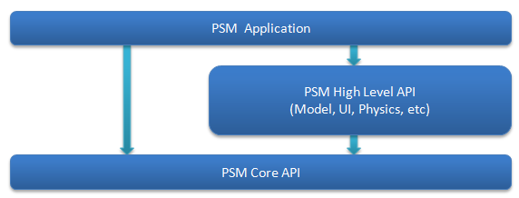

This document explains the overview of the PlayStation(R)Mobile.
Contents
The PlayStation(R)Mobile SDK (PlayStation(R)Mobile Software Development Kit) is a development environment for applications that can be executed on multi-platforms.
With PSM SDK, you can create an application that can be executed with PS Vita, Android, and other devices for a single project and single binary file.
Thus, a developer is not required to write separate code for each device and the efficiency of application development can be greatly enhanced.
PSM SDK supports a simulator on Windows as a prototype development environment; the application can be efficiently developed by utilizing simulation on a Windows PC before having to run it on each device.
- Develop a PSM application on a Windows PC. Windows 7 and Windows 8 are supported for OS.
A PSM application can be executed on the following devices.
- PlayStation(R)Vita
- Android device (supporting PlayStation(TM)Certified)
- Windows PC (requires a video card supporting OpenGL 3.0 or later)
Note: See the following site for the devices supporting PlayStation(TM)Certified.
http://www.playstation.com/psm/
- Development with the PSM SDK is carried out using C# on the PSM Studio integrated development environment.
- A C# source code is compiled to a managed code (PSM application) by the C# compiler.
- The created PSM application is transferred from PSM Studio to each device.
- The Mono runtime (virtual machine compatible to the .NET Framework) performs a JIT (just in time) compile on the transferred PSM application and executes the program.

Figure 1 PSM application and virtual machine
PSM Studio
Use PSM Studio as the integrated development environment (IDE).
Source code editing, building, transferring of a PSM application to a device, debugging, and other operations can be performed together with PSM Studio.
UI Toolkit, PSM UI Composer
The UI Toolkit is a library summarizing the scheme and widgets (GUI parts) required for creating a user interface on PSM.
The PSM UI Composer (hereafter abbreviated as "UI Composer" in this SDK document) is a tool supporting the design of the user interface; it enables the laying out of buttons and labels, as well as the setting of each widget.
For details, refer to UI Toolkit.
Publishing Utility
The Publishing Utility is a tool to set metadata, create a master package, and manage keys of a PSM application.
The API (Application Programming Interface) of PSM SDK is provided as a C# base class library.
APIs that will serve as the base for game development, including rendering and sound playback, are provided with Sce.PlayStation.Core.
APIs that have advanced features, such as 3D model rendering and physical engine, are provided with Sce.PlayStation.HighLevel.
Fig. 2 Library hierarchy
For API details, refer to the API Reference.